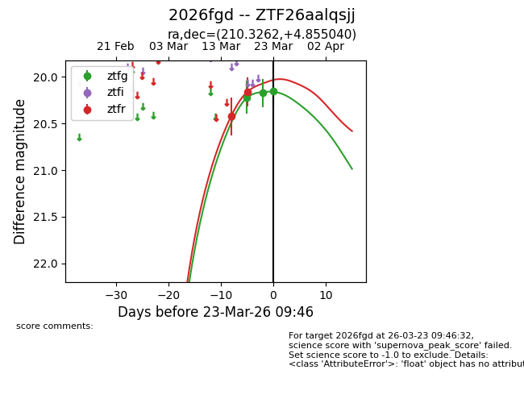
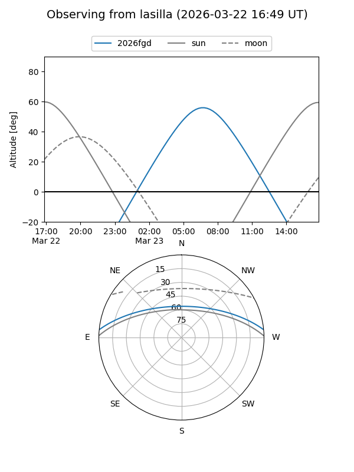
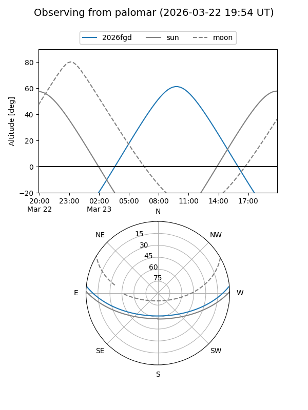
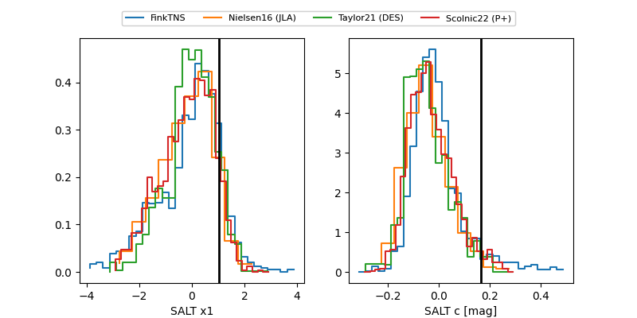

2026fgd
Target 2026fgd at 2026-03-23 09:48
Aliases and brokers:
FINK: link
Lasair: link
ALeRCE: link
TNS: link
YSE: link
alt names
ZTF26aalqsjj (ztf,fink_ztf)
2026fgd (tns,yse)
Coordinates:
equatorial (ra, dec) = 210.3262,+4.85504
equatorial (HMS+DMS) = 14:01:18.28,+04:51:18.15
galactic (l, b) = (342.8016,+62.18985)
Flags:
Photometry:
last ztfg=20.15, ztfr=20.16
3 ztfg, 2 ztfr detections
Lightcurve

Visibility


Additional plots
